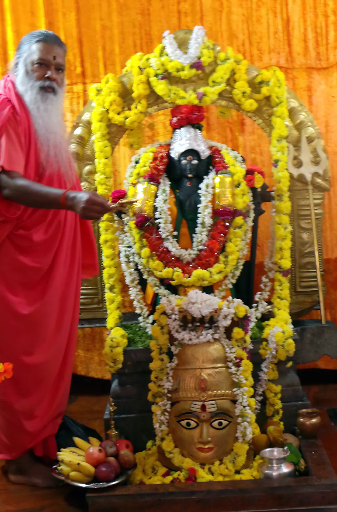

அத்தியாயம் I 1942
காவிரியில் ஒரு பாறையின் மீது அவதாரம்
கர்நாடகாவின் மேகதாதுவில், அர்காவதி, காவிரி, குப்தகாமினி ஆகிய மூன்று நதிகளின் புனிதச் சங்கமத்தில், பின்னாளில் ஸ்ரீ நரஹரி தீர்த்த ஸ்வாமி என்று அறியப்பட்ட நரசிம்ம சாஸ்திரி, ஜயலக்ஷ்மி மாதா என்ற பக்திமிக்க அந்தணத் தம்பதியருக்கு, 26 மே 1942 அன்று ஸ்ரீ ஸ்வாமிஜி அவர்கள் அவதரித்தார்கள்.
அவர்களின் அவதாரம் உண்மையில் காவிரி நதியில் ஒரு பாறையின் மீது நிகழ்ந்தது. அப்போது அவர்களின் அன்னை ஆழ்ந்த தியானத்தில் இருந்தார்கள்; திருநீறு பூசிய மேனியுடன் குழந்தையாக அவர்கள் அவதரித்தார்கள். அவர்களுக்கு சத்யநாராயணா என்று பெயரிடப்பட்டது. அவர்கள் உயர்ந்த ஞானமும் அறிவும் கொண்டிருப்பார்கள் என்றும், மனிதகுலத்தை உயர்த்துவதற்கென்றே அவதரித்துள்ளார்கள் என்றும் ஓர் இஸ்லாமியத் துறவி அவர்களின் பெற்றோரிடம் முன்னுரைத்திருந்தார்.
- அவதாரம்
- 26 மே 1942
- இந்து பஞ்சாங்கம்
- ஜ்யேஷ்ட சுத்த ஏகாதசி, சித்ரபானு ஆண்டு
- பெயர்
- சத்யநாராயணா